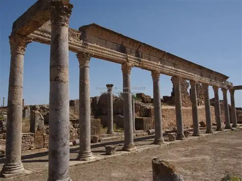

Site archéologique de Thuburbo Majus
Ancienne cité romaine située près d'El Fahs, Thuburbo Majus était une ville prospère de l'Afrique romaine. Le site comprend un capitole imposant, des thermes magnifiques, un forum et de superbes mosaïques, offrant un témoignage exceptionnel de l'urbanisme romain.